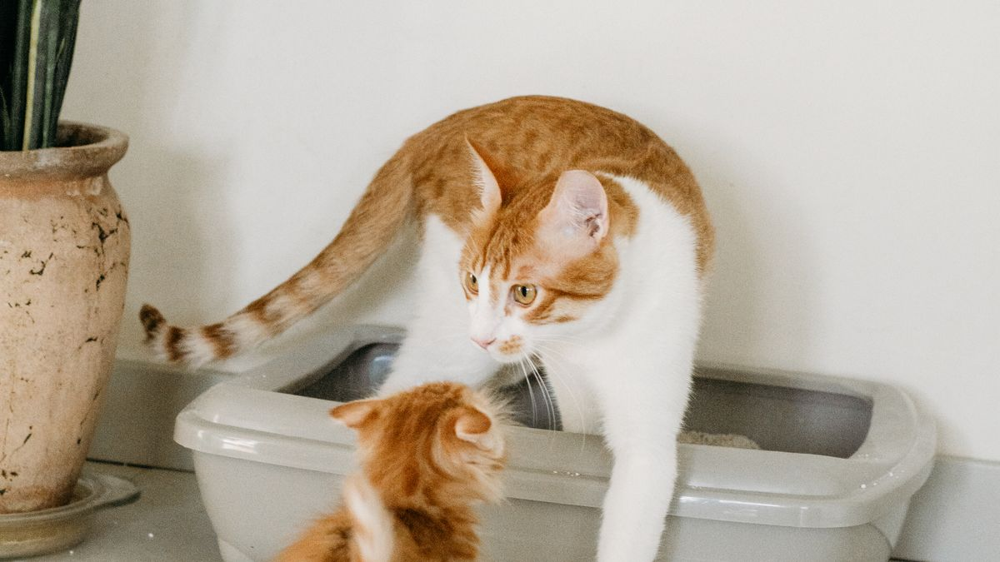
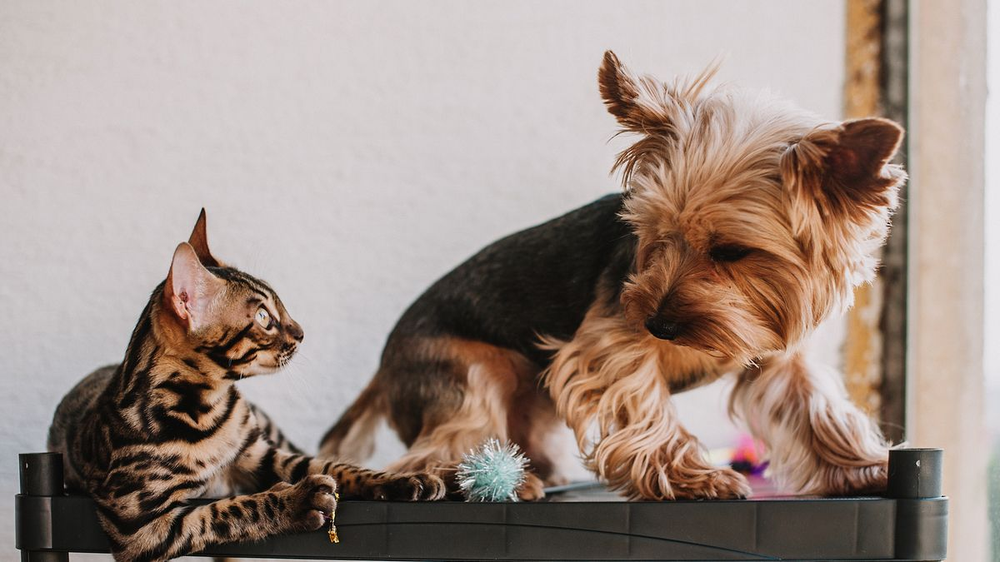
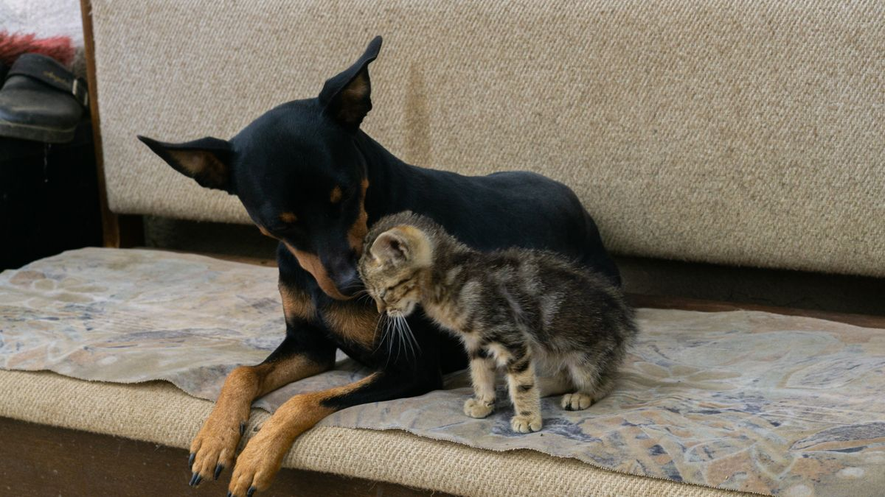

급여는 했는데 약이 빠졌을 때
출장 2박 3일, 펫시터에게 하루 2회 방문을 맡긴 집이 있었습니다. 돌아와 보니 사료 그릇은 비어 있었고, 배변 패드는 정리됐지만 저녁 약 먹이는 시간이 빠져 있었습니다. 펫시터에게 물어보니 '급여 시간만 받았다'고 했고, 보호자는 구두로만 설명했다고 말했습니다. 반려동물은 크게 다치지 않았지만, 그다음 주까지 식욕이 들쭉날쭉했습니다.

이 글은 펫시터 업체 선정·계약·보험 비교를 다루지 않습니다. 이미 담당을 정했거나 맡기기로 한 뒤, 인수인계를 문서로 정리하는 방법에 집중합니다. 돌봄 방식 전체 비교는 1박 이상 외출 체크리스트 글, 짧은 외출 연습은 혼자 있는 시간 연습 글을 먼저 보세요.
왜 구두보다 5블록 문서일까
펫시터·지인 모두 '우리 집 루틴'을 처음 듣는 사람입니다. 구두 설명은 급여 시간은 남고, 약·간식 규칙·산책 회피 대상이 빠지기 쉽습니다. 담당이 바뀌거나 방문 시간이 어긋나면 같은 질문이 카톡으로 반복됩니다.

인수인계의 목표는 완벽한 매뉴얼이 아니라 같은 실수를 반복하지 않게 하는 것입니다. A4 한 장에 5블록만 고정해 두면, 방문 횟수가 2회든 3회든 순서가 같아집니다. 외출 3일 전에 초안을 쓰는 편이 전날 밤에 쓰는 것보다 빠뜨린 항목이 적습니다.
인수인계 5블록
아래 5블록을 메모 앱 한 페이지·클립보드 한 장에 모으세요. 숫자·시간·이름을 문장이 아니라 표로 쓰는 편이 빠뜨리기 어렵습니다.

- 급여: 브랜드·하루 그램·시간(아침 7시/저녁 7시)·그릇 위치·간식 규칙(하루 2개까지 등)
- 약: 이름·용량·시간·먹이는 방법(간식에 섞기·빈 속 금지)·남은 일수
- 산책·배변: 회수·분당 시간·목줄 종류·피할 대상(큰 개·오토바이)·패드·화장실 위치
- 비상: 주 수의사·24시 병원·보험·집주인·보호자 2차 연락처·열쇠·비밀번호
- 행동: 낯선 사람 반응·문 소리·혼자 있을 때(짖음·은신 위치)·절대 하지 말 것(소파·침대·간식 추가 금지)
고양이는 산책 대신 화장실·물그릇·캣타워 위치를 3블록에 넣습니다. 다견 가정은 그릇·산책을 마리별로 나눠 적으세요. 일상 루틴 전체는 하루 루틴 설계 글, 관찰 항목은 집에서 보는 관찰 글을 참고해 5블록에 옮기면 됩니다.
사전 방문 30분
외출 3~7일 전, 펫시터가 실제 방문 30분을 한 번 합니다. 급여·산책 전체를 시연할 필요는 없고, 반려동물이 낯선 사람·문 소리·현관 출입에 어떻게 반응하는지 보는 시간입니다.

사전 방문에서 확인할 것: 사료 그릇·약 위치를 펫시터가 혼자 찾는지, 목줄·이동장 착용 시 반응, 배변 패드·화장실 위치 인지 여부. 거부·짖음이 심하면 방문 횟수를 늘리거나 위탁을 검토하는 집도 있습니다. 첫 외출 연습이 안 된 개체는 혼자 있는 시간 연습을 먼저 한 뒤 사전 방문을 잡으세요.
사전 방문 후 5블록 초안을 펫시터와 함께 읽으며 빠진 항목을 그자리에서 추가합니다. '나중에 카톡으로 보낼게요'보다 당일 수정이 실수를 줄입니다.
방문 시간표 붙이기
5블록 옆에 날짜별 방문 시간표를 붙입니다. 예: 7/12 아침 7시·저녁 7시, 7/13 아침 7시·오후 2시·저녁 7시. 약 시간에 반드시 사람이 들어와야 하면 표에 빨간색으로 표시하세요.
소형견·고령견·약 복용 개체는 하루 3회 방문을 검토하는 집이 많습니다. 고양이는 하루 2회 방문+자동급식기 조합이 흔하지만, 약·배변 관리가 필요하면 3회를 고려하세요. 밤 시간 공백이 길면 집에 두기만으로는 부족할 수 있습니다.
외출 전날 산책·급여 시간을 2시간 이상 바꾸지 마세요. 루틴이 흔들리면 돌아온 뒤 '평소와 다른지' 판단이 어려워집니다. 가족 분담이 안 맞으면 가족 합의 글의 표를 돌봄 담당에 맞게 바꿔 쓰세요.
외출 중 소통 규칙
인수인계에 사진·연락 규칙을 한 줄로 적습니다. 예: '식사·산책 후 사진 1장, 이상 시 즉시 전화'. 사진이 없으면 돌아와서 추측하게 됩니다.
이상 신호 기준도 미리 씁니다. 식욕 50% 이하·구토 1회·배변 사고 2회 연속·4시간 이상 은신·호흡 이상—이 중 하나면 보호자에게 연락. 경미한 변화는 메모만 남기고 다음 방문에 확인해도 됩니다.
열쇠·비밀번호·비상 연락처는 5블록과 별도로 가족 단톡방에도 올려 두세요. 담당 펫시터가 바뀌어도 같은 정보를 볼 수 있습니다. 병원 기록·최근 검진 메모가 있으면 첫 병원 방문 준비 글처럼 7일 관찰 요약을 한 줄로 붙이면 상담이 빨라집니다.
이번 주 적용하기
펫시터 인수인계는 '완벽한 설명'보다 5블록+시간표+사진 규칙이 먼저입니다. 외출이 없어도 초안을 써 두면 급한 날 재사용할 수 있습니다.

약을 먹는 개체는 '집에 두기만'은 위험할 수 있습니다. 약 시간에 반드시 방문이 들어오는지 시간표에서 먼저 확인하세요.
첫 1박은 가까운 일정으로 시험해 보세요. 멀리 떠나기 전에 '인수인계가 통하는지' 확인하는 주가 있습니다.
이번 주 펫시터 인수인계 체크리스트입니다. 항목 3개만 골라 쓰세요.
- 외출 3일 전 5블록 초안을 작성했습니다.
- 사전 방문 30분 일정을 잡고 그릇·약 위치를 확인했습니다.
- 날짜별 방문 시간표를 5블록 옆에 붙였습니다.
- 식사·산책 후 사진 1장 규칙을 공유했습니다.
- 이상 신호(식욕·구토·배변·은신) 연락 기준을 한 줄로 적었습니다.
- 외출 전날 산책·급여 시간을 2시간 이상 바꾸지 않았습니다.
- 돌아온 뒤 30분 안에 식욕·배변·수면을 확인했습니다.
5블록이 익숙해지면 지인 돌봄·위탁에도 같은 형식을 쓸 수 있습니다. 1박 이상 외출 체크리스트와 함께 보면 돌봄 방식 선택이 수월합니다.
정리하며
펫시터 비용을 아끼려다 약 시간을 빠뜨린 집을 봤습니다. 인수인계 5블록은 비용이 아니라 사고 예방입니다.
오늘 밤 한 가지만 해도 됩니다. 급여·약·산책·비상·행동 중 가장 자주 빠지는 블록 하나를 표로 적어 보세요.
이 글은 전문 치료·응급 처치를 대체하지 않습니다. 반복되는 식욕 급감·배변 이상은 메모를 들고 상담을 검토하세요.
초보자가 자주 실수하는 포인트
- 구두로만 설명하고 약·간식 규칙 누락
- 외출 전날 밤에만 인수인계 작성
- 사전 방문 없이 첫 방문부터 맡김
- 방문 시간표 없이 '하루 2번'만 전달
- 돌아온 뒤 식욕·배변 변화 무시
체크리스트
- 5블록 초안(외출 3일 전)
- 사전 방문 30분
- 날짜별 방문 시간표
- 식사·산책 후 사진 규칙
- 돌아온 뒤 30분 관찰
자주 묻는 질문
- overnight-absence-checklist 글과 무엇이 다른가요?
- 1박 이상 외출 글은 지인·펫시터·집에 두기·위탁을 비교합니다. 이 글은 펫시터를 맡기기로 한 뒤 인수인계 5블록·사전 방문·방문 시간표·소통 규칙에 집중합니다. 방식을 고른 뒤 이 글 순서가 자연스럽습니다.
- 지인에게 부탁할 때도 5블록을 쓰나요?
- 네. 지인이라도 우리 집 루틴을 모르는 경우가 많아, 같은 5블록과 사전 방문 1회가 실수를 줄이는 데 도움이 됩니다.
- 사전 방문 없이 가능한가요?
- 급한 일정이면 짧은 화상 통화+사진 3장으로 대체하는 집도 있습니다. 다만 반려동물이 낯선 사람을 싫어하면 첫 실제 방문에서 문제가 드러나기 쉬워, 가능하면 30분 사전 방문을 권합니다.
이 글은 초보자 기준으로 이해하기 쉽게 정리되었으며, 내용은 운영 과정에서 순차적으로 보완될 수 있습니다. 수의사 등 전문가의 진단·처치를 대체하지 않습니다.